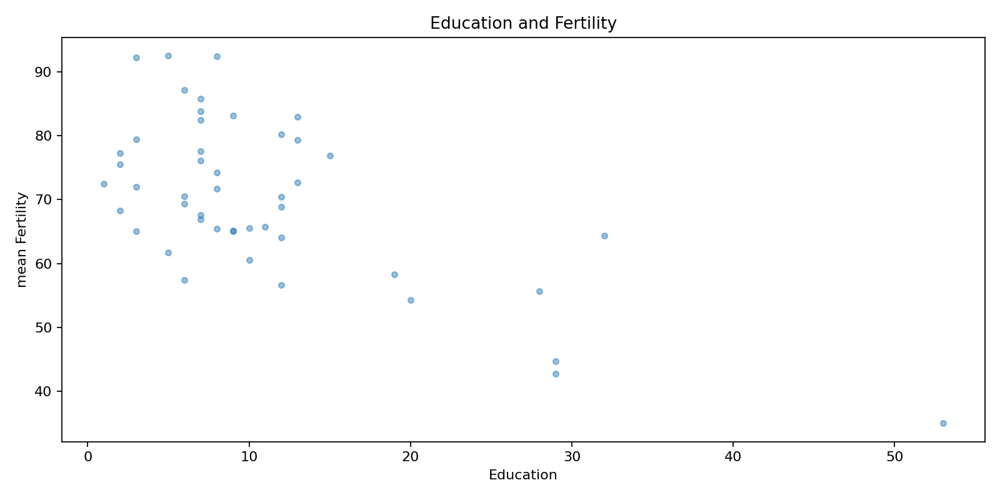

How are education and fertility associated across historical regions?
Among 47 complete observations, Pearson r = -0.664 and Spearman rho = -0.443.

| predictor | outcome |
|---|---|
| 1 | 72.5 |
| 2 | 68.3 |
| 2 | 75.5 |
| 2 | 77.3 |
| 3 | 65.0 |
| 3 | 72.0 |
| 3 | 79.4 |
| 3 | 92.2 |
| 5 | 92.5 |
| 5 | 61.7 |
| 6 | 87.1 |
| 6 | 57.4 |
| 6 | 69.3 |
| 6 | 70.5 |
| 7 | 85.8 |
| 7 | 76.1 |
| 7 | 83.8 |
| 7 | 82.4 |
| 7 | 66.9 |
| 7 | 77.6 |
| 7 | 67.6 |
| 8 | 92.4 |
| 8 | 71.7 |
| 8 | 74.2 |
| 8 | 65.4 |
| 9 | 83.1 |
| 9 | 65.1 |
| 9 | 65.0 |
| 10 | 65.5 |
| 10 | 60.5 |
| 11 | 65.7 |
| 12 | 80.2 |
| 12 | 64.1 |
| 12 | 68.9 |
| 12 | 56.6 |
| 12 | 70.4 |
| 13 | 82.9 |
| 13 | 79.3 |
| 13 | 72.7 |
| 15 | 76.9 |
| 19 | 58.3 |
| 20 | 54.3 |
| 28 | 55.7 |
| 29 | 44.7 |
| 29 | 42.8 |
| 32 | 64.4 |
| 53 | 35.0 |
Ecological 1888 Swiss data; correlation does not establish individual behaviour or causation.
Identify confounding and avoid policy extrapolation.